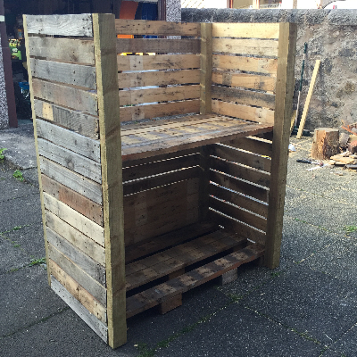

Grieve Crafts
About Our Company
Formed in 2016, Grieve Crafts is an enviornmentally-friendly company whose products are all made from recycled wood
Built from recycled wooden pallets our exclusive wood hse is available at a discounted price of £235
Starting Point: Dismantle four or five old pallets.
Halfway Point: The basic structure is assembled.
Finishing Point: The finished, painted product.